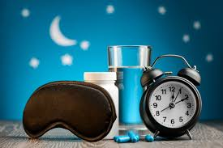
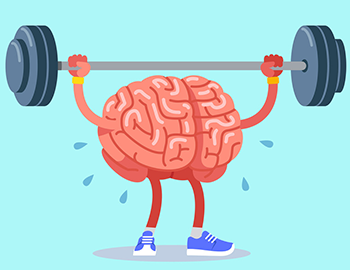

Os benefícios da prática de exercícios físicos para a saúde mental e bem estar em qualquer idade
O que é exercício físico?
Apesar de estar relacionado com o movimento do corpo, o exercício físico trata-se de uma atividade programada,
com movimentos executados de forma planejada e com objetivos específicos. Além disso, os exercícios devem ser constantes
e realizados com acompanhamento de profissionais especializados. Eles são responsáveis pelas instruções e
direcionamentos
sobre intensidade, duração, cargas, objetivos e outras indicações importantes para a realização correta do exercício.
O cronograma de exercícios é desenvolvido a partir da avaliação do perfil e estado físico de cada pessoa.
Benefícios
Bem Estar
Os exercícios e atividades físicas ajuda a liberar endorfina, hormônio que está relacionado às sensações de bem-estar e prazer.
Logo, quem mantém o corpo ativo melhora o humor, diminui a tristeza e depressão e melhora a sociabilidade, aspectos
fundamentais para se viver melhor.

Qualidade do sono
Quem sofre com insônia ou tem um sono ruim tem a atividade e o exercício físico como grandes aliados. A prática regular ajuda a
estabilizar os hormônios, o cérebro consegue produzir e equilibrar as substâncias relacionadas ao bom funcionamento do
corpo e também da mente.

Saúde Mental
A saúde mental também é beneficiada com exercícios e atividades físicas. Algumas modalidades, como esportes coletivos, ajudam
na socialização, aprendizado e desenvolvem áreas do cérebro que previnem sintomas de ansiedade e depressão.
Além disso, ao liberar endorfina, o organismo também libera hormônios como a serotonina. Ambos são neurotransmissores e reduzem
o estresse, ansiedade e depressão. Eles ainda melhoram a memória, raciocínio e ajudam na estabilização das emoções.
"Disciplina é um ato de amor próprio ! É quando você se ama ao ponto de sacrificar velhos hábitos para permitir que a sua melhor versão cresça.
Quando você começa a focar em você, o único arrependimento é de não ter começado antes." É isso que o exercício físico é: auto cuidado.

.jpeg)